RunCraft 把課表、完成的訓練與恢復狀況接起來——讓今天的安排反映現在的你，而不是幾週前下載的固定模板。
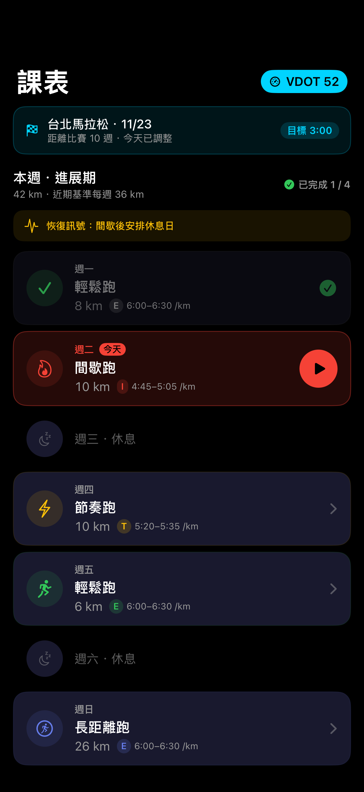
卡關的跑者不是懶，是在猜。以下是「猜」最常現形的地方。
輕鬆日不夠鬆，恢復不了；質量日不夠新鮮，跑不快。練得很勤，成績停在原地。
網路上的 PDF 課表預設了別人的體能。上面的配速對你不是慢跑就是比賽，而你分不出是哪一種。
加量一路感覺良好，直到不再良好。等到開始痛，那個錯誤已經是三週前犯下的。
手錶說 8 公里 44 分。它沒說這是不是你今天原本該跑的那一堂課。
輸入一次比賽或測驗成績。RunCraft 把它換算成你的 VDOT 體能分數，再把這個數字變成你的每一種訓練配速。「輕鬆」終於有了明確的數字。
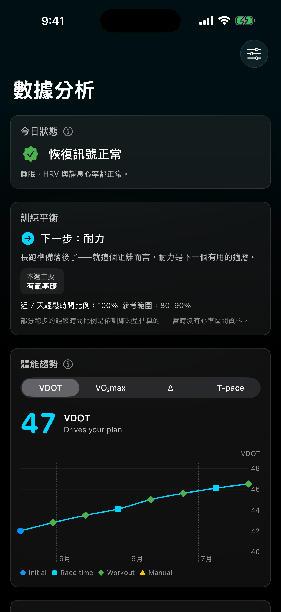
週期化課表從比賽日往回推排定。沒有一個早晨要從空白開始——瞄一眼鎖定畫面，今天已經決定好了。
當睡眠、HRV、靜息心率或近期負荷指出需要恢復，RunCraft 會直接在課表中顯示一項清楚的建議，再由你決定是否套用。
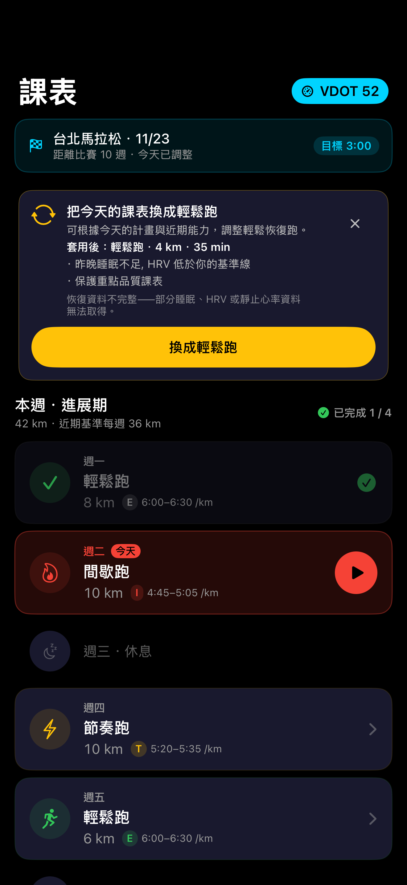
如果你異常疲累、腿部痠痛或身體不舒服，只在需要時主動回報。這是一個安全出口，不是每天必填的健康問卷。
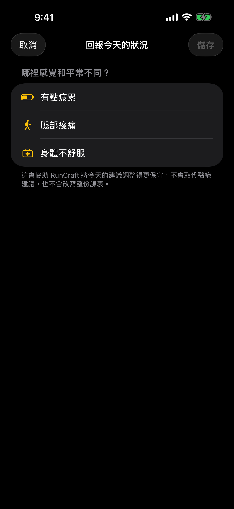
不是每份課表都該從 5K 起跳。走跑交替進程從你真正的起點出發，一步步帶你走到連續 30 分鐘。
選擇簡單的每週例行訓練，或只記錄跑步；之後隨時可以改變方向。
RunCraft 把原本要完成的訓練，和實際跑出的結果放在一起，而不是只留下一個完賽時間。
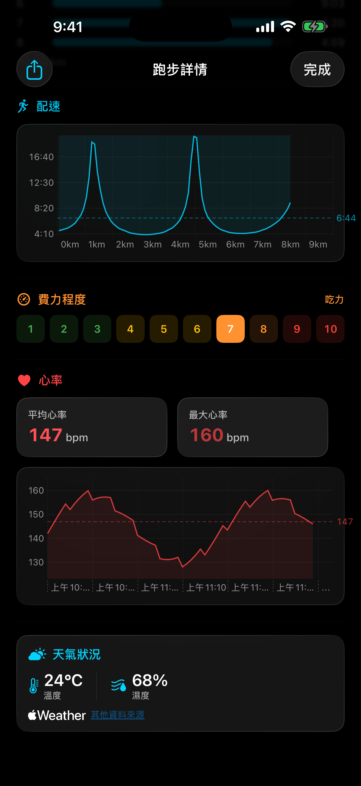
RunCraft 盯著你的急性／慢性訓練負荷比——這週的量對照你累積出來的底子——在那一跳變成傷病之前出聲。
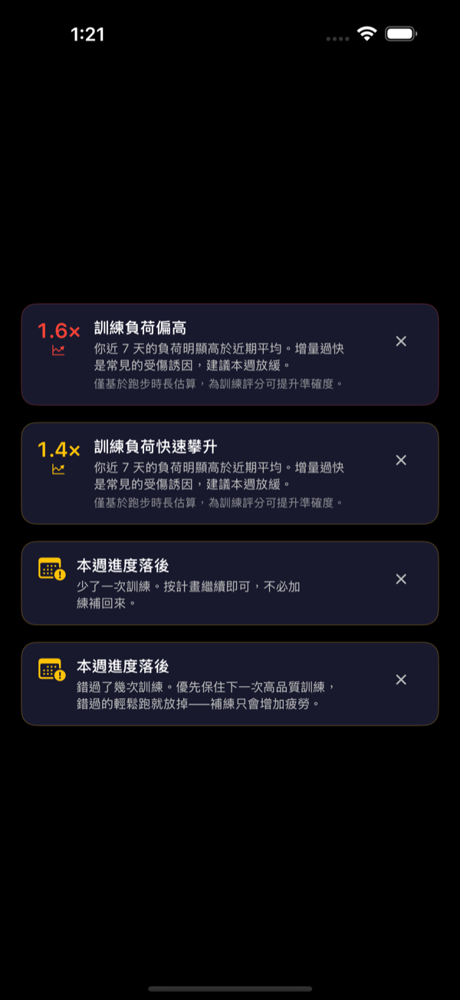
熱身、主課、恢復、收操——拖進位置，一鍵傳到 Apple Watch。它會完全照著你寫的跑。
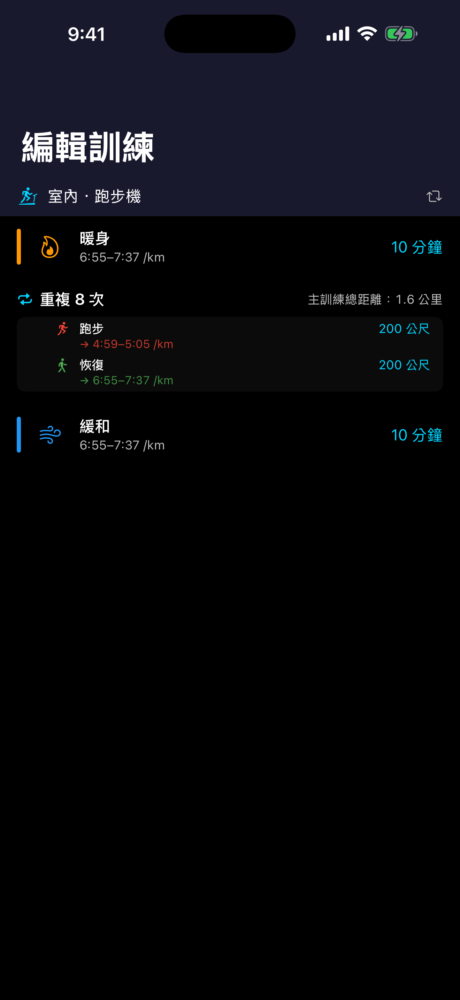
有些跑步配得上一張照片。放進你自己拍的那張，RunCraft 把數據乾淨地疊上去——不必再截一張雜亂的儀表板。
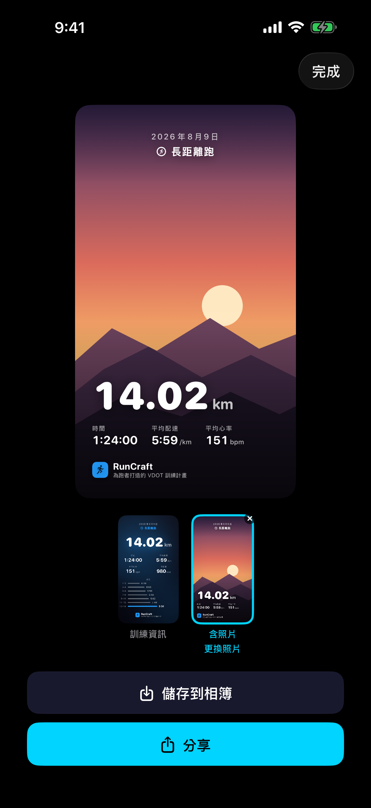
從手錶開始今天的課表，剩下的交給 RunCraft：一個目標、偏離時的一下震動、還剩多少。注意力留給跑步本身。
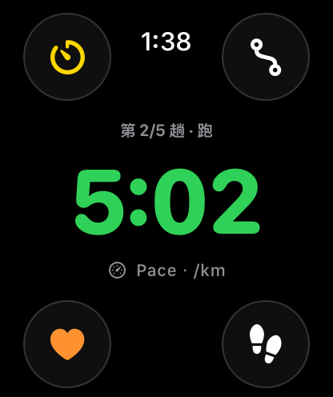
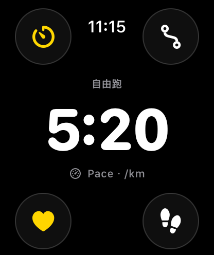
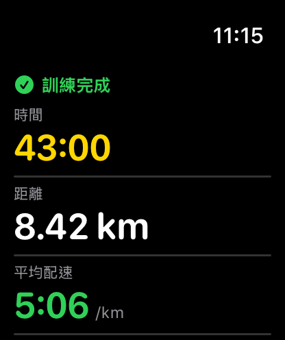
跑到一半掏出手機，同一堂課就在上面——趟數、即時配速、心率區間——與手腕上完全同步。
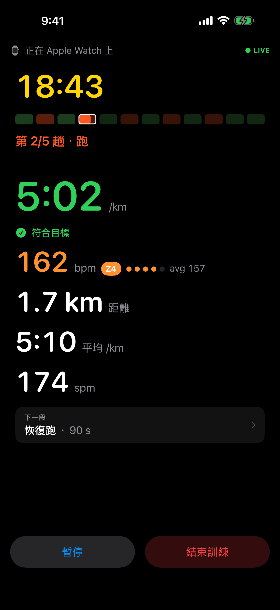
訓練配速從 Jack Daniels 的 VDOT 出發，再用近期跑量、完成的課程與恢復狀況，讓課表符合你現在真正能做的事；只有感測器漏掉狀況時，才由你的主動回報補上。
App Store 的評分與評論是最好的回饋管道——每一則我們都會看。或隨時來信 support@marstudio.app。
要寫 RunCraft 嗎？logo、螢幕截圖與制式介紹都準備好了。開啟媒體資料